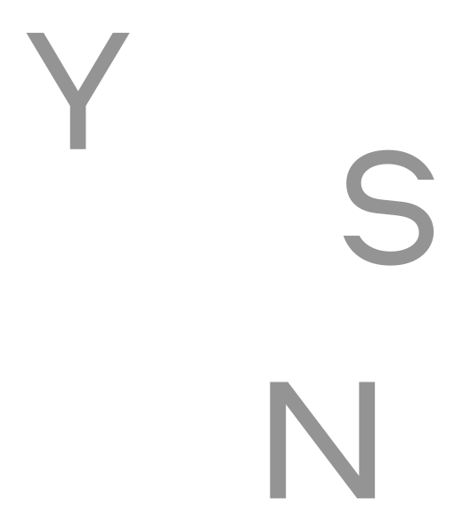
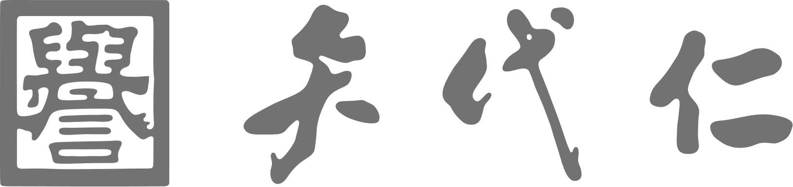

01
いちまいの、なが〜い布があったとさ
10メートルを越える長さの1枚の生地が、着物という衣服になる。その仕組みを、実寸大の反物や、折り紙、テクノロジーをつかって体感します。
10メートルを越える長さの1枚の生地が、着物という衣服になる。その仕組みを、実寸大の反物や、折り紙、テクノロジーをつかって体感します。
「仕立て」という技術によって、生地を長く活用することができる着物。その仕組みをひも解きながら、現代における実例をみつめます。
とある着物初心者と、そのかかりつけの和裁士の会話、「仕立てあるある」を描く四コマ漫画から、仕立てると着るの間のリアルに迫ります。
矢代仁が、300年つづけたものを350年までつづけるために、2024年にスタートしたプロジェクト。「ゆっくり」とは、できるだけ長い目線で考えること。「しっかり」とは、いま可能な選択肢をきちんと検討すること。「のこす」とは、受け継がれてきた着物の価値を捉えなおすこと。それらを念頭に置きつつ、「着物を考えるための調べもの」を毎年発表しながら、10年間つづけることを目標としています。

京都・室町二条にて、元祖・矢代庄兵衛によって1720年に創業。祖業の「織」を原点に、御召などの織物、友禅・刺繍・絞りなどを用いた染物をあつかう呉服メーカー問屋です。1758年に二代目が記した家訓「定メ」を、いまも年に2回全社で読み継ぎながら、江戸、明治、大正、昭和、平成、令和という時代を通じて、「着物」をあつかった商売をつづけています。

これまでのアーカイヴ
Rethinking about Kimono from Contemporary Angle
(参加パートナー) 丁香、座二郎、藤田美穗、BASSDRUM、丸山萌、rekko
(プロジェクトメンバー) ディレクション：須田伸一／アートディレクション・デザイン：米山菜津子／空間設計：Siin Siin／編集：わかめかのこ／プロジェクトマネージメント：原田ふくみ／WEBデザイン・開発：島影南美／広報：水谷秀人／会場協力：Gallery SUGATA／責任編集：矢代真也（矢代仁）